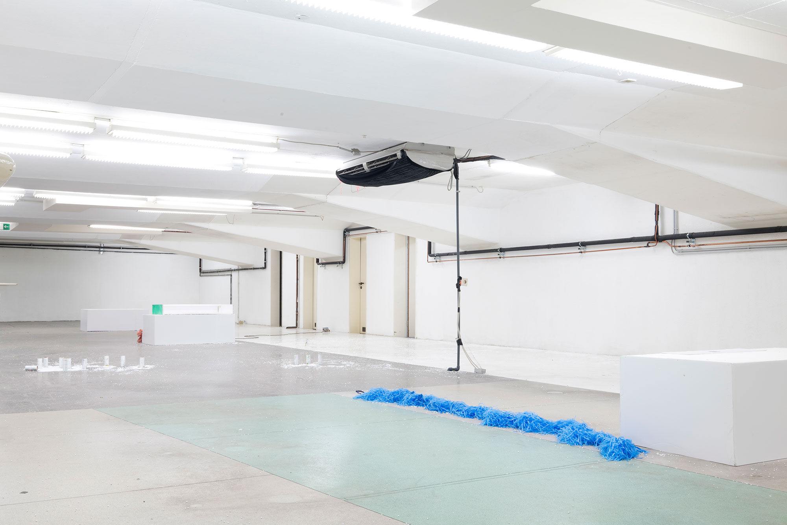
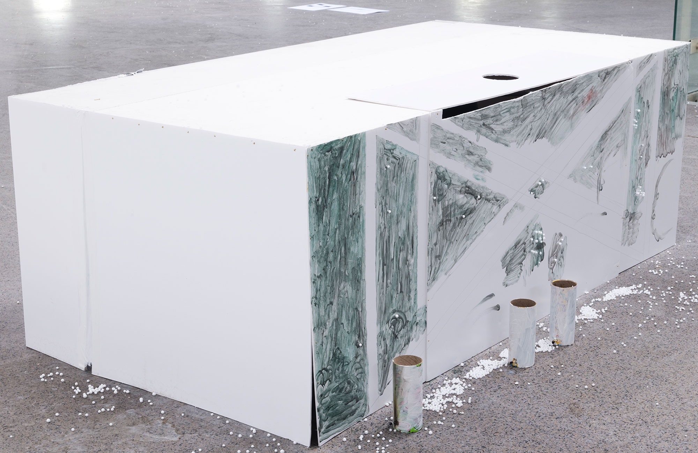
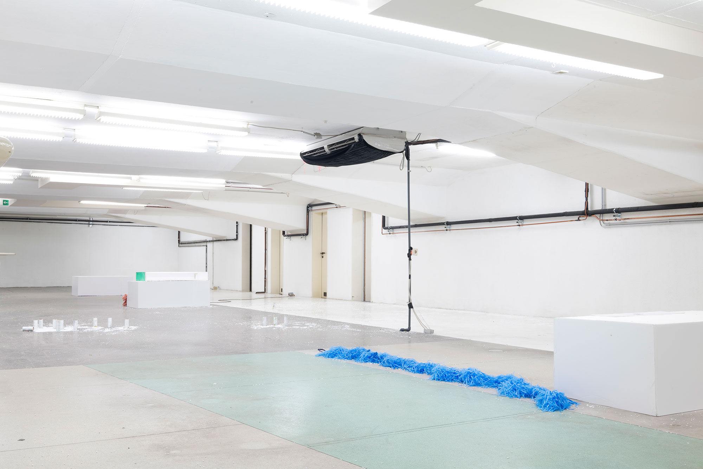
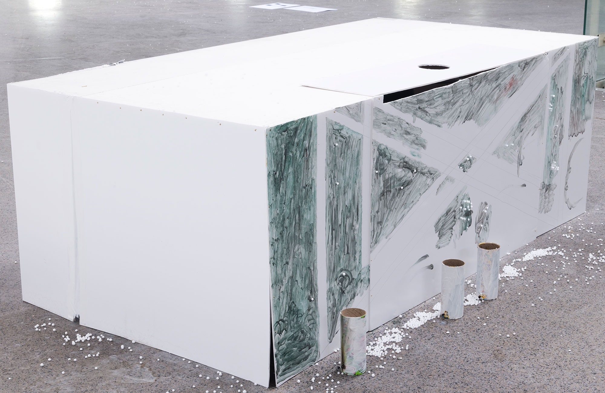

Fondation Tschuess
Sam Marshall Lockyer
Scene 4, Take 9, Street Named Psycho politics, Ep1, Se1
30.01.2023 19:00-21:00
31.01.2023 17:00-20:00
Screening every 20 minutes


 




Scene 4, Take 9, Street Named
Psycho politics, Ep1, Se1
17min
2022
NY Times article by Tennessee Williams,
A Streetcar Named Success, 1947
Print on Blanket
150x200cm
2022